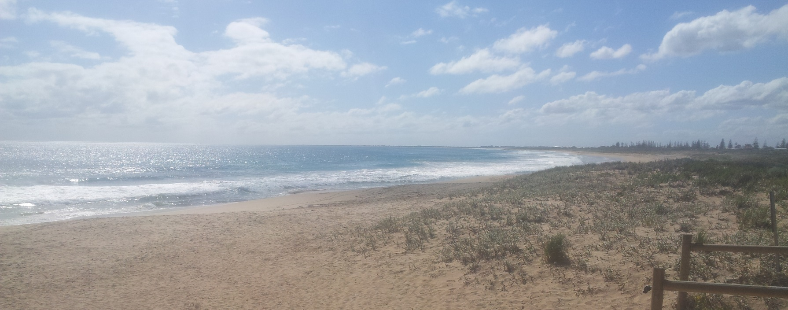

Assessment 1: My profile
My first paragraph.test

Hi Everyone, I'm Daniel.
I live in Singleton, Western Australia - an hour south of Perth. GMT+8, so we're two hours behind the East Coast.
I'm into US politics (possibly too much) and spending time at the beach a few minutes bike ride from my house.
I aim to complete a Bachelor of IT over the next 5 or 6 years doing part time online study.
I'm looking forward to this intro unit giving me a broad outline of all the different aspects and areas of IT -
and also a much needed chance to improve my writing skills.
We're lucky to not have too many restrictions due to COVID in WA and also the sunny days are starting to be more
frequent so i was able to get a round of golf in with my brother last week and get all his family updates about my
nieces and nephew and their latest shenanigans.
I wish everyone the best in their studies this year. Here's a quick snap of my local beach I took today.
Singleton Beach Spring 2020
